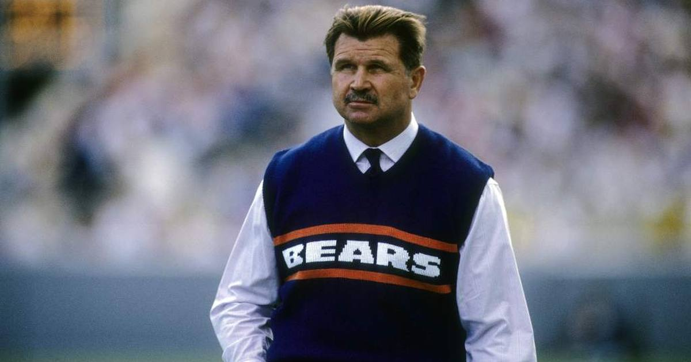

Bears Honor Mike Ditka in Emotional Tribute Night, Hold Off Patriots 30-24
Chicago's first home game since Mike Ditka died Oct. 9: fake mustaches in the stands, a moment of silence, a No. 89 stencil in the grass — and fittingly, a 30-24 win over the Patriots, the Bears' Super Bowl XX victim, sealed by Cairo Santos's career-long 58-yarder.

Some nights the story is bigger than the scoreboard. Thursday night at Soldier Field was one of them.
The Tribute
Chicago played its first home game since Hall of Famer Mike Ditka died Oct. 9 at 86 — and the Bears made sure nobody forgot him:
• Fans wore fake Ditka mustaches throughout the stadium
• A moment of silence before kickoff
• A No. 89 stencil in the grass
And fittingly, the opponent was New England — the Bears' Super Bowl XX victim. Ditka's one championship, on the field the night they honored him.
The Game
• Final: Bears 30, Patriots 24 — Chicago moves to 5-2, New England falls to 4-3
• Caleb Williams (22-of-33, 308 yards, 2 TD) outdueled Drake Maye (24-of-31, 321 yards, 2 TD, 1 INT, plus a rushing TD) in the 2024 draft-class rematch
• Luther Burden III: 4 catches, 130 yards, TD — all in the first half
• Cairo Santos hit a career-long 58-yard field goal with 1:34 left to seal it, after missing from 53 earlier; Rome Odunze recovered the onside kick
The Read
A tribute night, a 2024-draft QB duel that delivered, and a kicker going from a 53-yard miss to a 58-yard dagger. The Bears are 5-2 and the ones who honored Ditka best were the ones playing like his teams did.
Sources: NBC Sports — 'Thursday Night Football: Bears fend off Patriots 30-24' · Bears Wire / USA Today — 'Instant analysis of the Bears' 30-24 win vs. Patriots in prime time'
Gear up: Fanatics